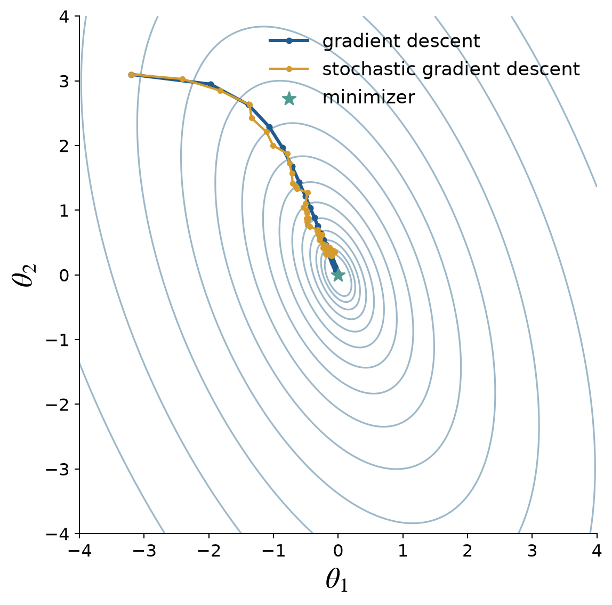

Selected Topics
October 22, 2026
Choose how to compute, optimize, search, and allocate
Modern CPUs and GPUs can evaluate many operations concurrently
Parallelism changes computational cost
It does not repair biased estimators or poor sampling designs
The prepared laptop demonstration compares
Check the actual backend, include generation and evaluation, and synchronize GPU timing
A faster processor helps when the workload outweighs its overhead
End-to-end time determines the practical gain
For the same IID contribution variance, in the throughput regime
\[ \text{speedup }s \quad\Longrightarrow\quad \text{about }sn\text{ samples in the same time} \quad\Longrightarrow\quad \frac{\operatorname{RMSE}_{\mathrm{CPU}}}{\operatorname{RMSE}_{\mathrm{GPU}}} \approx\sqrt{s} \]
More outputs can improve throughput without improving accuracy per output
Suppose
\[ Y=Y_1+Y_2, \qquad \mu=\mu_1+\mu_2, \qquad \mu_\ell=\Ex(Y_\ell) \]
Estimate the two means independently:
\[\begin{align*} \hmu&=\hmu_1+\hmu_2,& \hmu_\ell&=\frac1{n_\ell}\sum_{i=0}^{n_\ell-1}Y_{i\ell} \end{align*}\]
If one sample of \(Y_\ell\) costs \(\$_\ell\), then
\[\begin{align*} \operatorname{MSE}(\hmu) &=\frac{\var(Y_1)}{n_1}+\frac{\var(Y_2)}{n_2},\\ \cost(\hmu)&=n_1\$_1+n_2\$_2 \end{align*}\]
The sample counts should reflect both variance and cost per sample
For a fixed total cost \(C\), minimize
\[ \frac{V_1}{n_1}+\frac{V_2}{n_2} \quad\text{subject to}\quad n_1\$_1+n_2\$_2=C, \qquad V_\ell=\var(Y_\ell) \]
The optimal ratio is
\[ \frac{n_1}{n_2} =\sqrt{\frac{V_1\$_2}{V_2\$_1}} \]
and the optimal mean squared error is
\[ \operatorname{MSE}(\hmu) =\frac1C\left(\sqrt{V_1\$_1}+\sqrt{V_2\$_2}\right)^2 \]
Use more samples at a level with larger variance and fewer samples at a level with larger cost
The decomposition is useful when the expensive correction has small variance
Let
\[ Y=Y_1+\cdots+Y_L, \qquad \mu=\sum_{\ell=1}^L\mu_\ell, \qquad \mu_\ell=\Ex(Y_\ell) \]
With independent samples at each level,
\[\begin{align*} \hmu&=\sum_{\ell=1}^L\hmu_\ell,& \hmu_\ell&=\frac1{n_\ell}\sum_{i=0}^{n_\ell-1}Y_{i\ell},\\ \operatorname{MSE}(\hmu)&=\sum_{\ell=1}^L\frac{V_\ell}{n_\ell},& \cost(\hmu)&=\sum_{\ell=1}^Ln_\ell\$_\ell \end{align*}\]
The challenge is to choose both the level decomposition and the sample allocation
For total cost \(C\), the optimal allocation is proportional to
\[ n_\ell\propto\sqrt{\frac{V_\ell}{\$_\ell}} \]
More explicitly,
\[ n_\ell =\frac{C\sqrt{V_\ell/\$_\ell}} {\sum_{k=1}^L\sqrt{V_k\$_k}} \]
The resulting mean squared error is
\[ \operatorname{MSE}(\hmu) =\frac1C\left(\sum_{\ell=1}^L\sqrt{V_\ell\$_\ell}\right)^2 \]
Efficiency depends on keeping \(V_\ell\$_\ell\) small across levels
Suppose
\[ \mu=\lim_{d\to\infty}\Ex\{f_d(\vX_{1:d})\} \]
as in an option payoff based on an increasingly fine time discretization
Choose \(d_1<\cdots<d_L\) and define coupled differences
\[\begin{align*} Y_1&=f_{d_1}(\vX_{1:d_1}),\\ Y_\ell&=f_{d_\ell}(\vX_{1:d_\ell}) -f_{d_{\ell-1}}(\vX_{1:d_{\ell-1}}), \qquad \ell\ge2 \end{align*}\]
Then
\[ \Ex\{f_{d_L}(\vX_{1:d_L})\} =\sum_{\ell=1}^L\Ex(Y_\ell) \]
with a remaining truncation bias \(\mu-\Ex\{f_{d_L}(\vX_{1:d_L})\}\)
Let \(\mu_L=\Ex\{f_{d_L}(\vX_{1:d_L})\}\) and \(b_L=\mu-\mu_L\)
Write \(Y_\ell=g_\ell(\vZ_\ell)\), \(\$_\ell=\$(g_\ell)\); use independent level means
\[ \operatorname{MSE}(\hmu)=b_L^2+\sum_{\ell=1}^L\frac{V_\ell}{n_\ell} \]
Choose \(L\) with \(b_L^2<\varepsilon^2\); write \(\varepsilon_{\mathrm s}^2=\varepsilon^2-b_L^2\)
With optimal allocation, ignoring setup and integer rounding,
\[ C(\varepsilon;g_1,\ldots,g_L)\approx\frac1{\varepsilon_{\mathrm s}^2} \left(\sum_{\ell=1}^L\sqrt{V_\ell\$_\ell}\right)^2 \]
For one unbiased level: \(C(\varepsilon;g_1)\approx V_1\$_1/\varepsilon^2\), as in Improving Efficiency
If \(d_\ell=m^\ell\), \(V_\ell\lesssim\beta^\ell\), and \(\$_\ell\lesssim m^\ell\), then
\[ \sum_{\ell=1}^L\sqrt{V_\ell\$_\ell} \lesssim\sum_{\ell=1}^L(\beta m)^{\ell/2} \]
Multilevel Monte Carlo is effective when correction variance decays faster than correction cost grows
For
\[ \vtheta_* = \argmin_{\vtheta\in\reals^m}\operatorname{Loss}(\vtheta), \]
gradient descent iterates
\[ \vtheta_{k+1}=\vtheta_k-\eta_k\nabla\operatorname{Loss}(\vtheta_k) \]
Move downhill using all available data
Suppose
\[ \operatorname{Loss}(\vtheta) =\sum_{i=0}^{N-1}\operatorname{loss}_i(\vtheta) \]
Computing the full gradient costs \(N\) component gradients
Stochastic gradient descent uses an inexpensive random component:
\[ \vtheta_{k+1}=\vtheta_k-\eta_k\nabla\operatorname{loss}_{I_k}(\vtheta_k), \qquad I_k\sim\Unif\{0,\ldots,N-1\} \]
Common variants include
The stochastic gradient is cheap but noisy
Averaging a mini-batch reduces its variance
Both methods minimize the same quadratic loss
Stochastic gradients use one randomly selected component at each step

At the current state, choose an action with a high expected return
Monte Carlo estimates guide which action to take and where to search next
| Step | What happens |
|---|---|
| Select | Follow branches using estimated returns and exploration bonuses |
| Expand | Add an untried action or a new node when possible |
| Simulate | Complete a rollout to a terminal state or chosen horizon |
| Backpropagate | Update visit counts and average returns along the traversed path |
Repeat until the simulation budget is exhausted, then choose a root action
Allocate simulations adaptively; avoid exploring every branch equally
An illustrative UCT selection score for visited actions is
\[ \overline Q(s,a)+c\sqrt{\frac{\log N(s)}{N(s,a)}} \qquad c>0 \]
For \(N(s)=60\) and \(c=0.2\),
| Action | \(N(s,a)\) | \(\overline Q(s,a)\) | Selection score |
|---|---|---|---|
| A | 40 | 0.70 | 0.764 |
| B | 10 | 0.60 | 0.728 |
| C | 10 | 0.68 | 0.808 |
\(\exstar\) Which action gets the next simulation, and why is it different from the largest estimated return?
From Monte Carlo estimates to computational design
Good simulation balances accuracy, computational cost, and evidence for stopping
Bring the course methods together in a concrete model or project:
The next step is a defensible end-to-end simulation
© 2026 Fred J. Hickernell · Illinois Tech · assisted by ChatGPT and Codex · Selected Topics · MATH 565 — Fall 2026 Website · \(\exstar\) = exercise